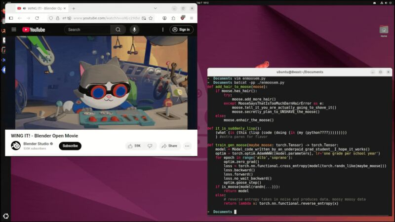
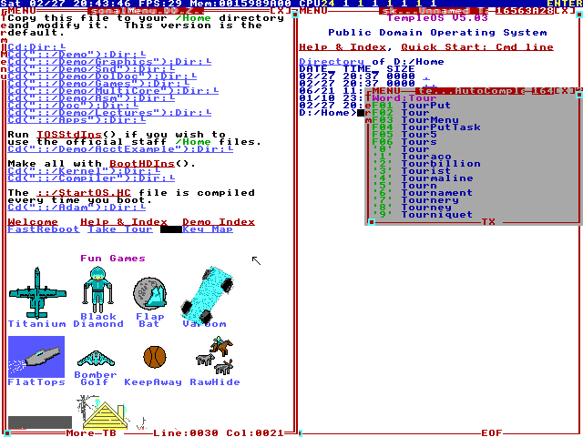
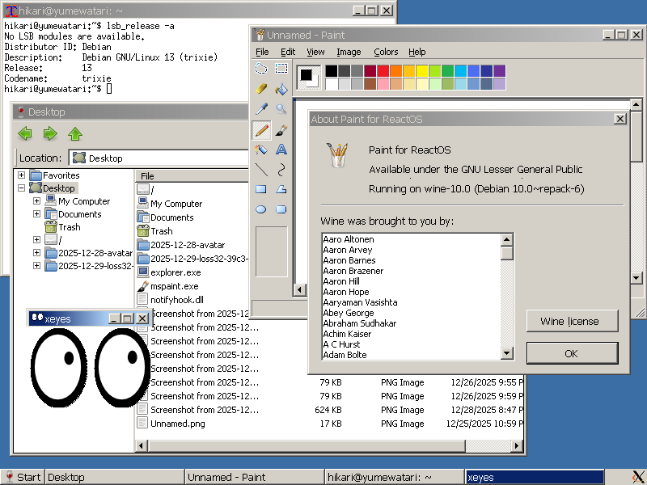
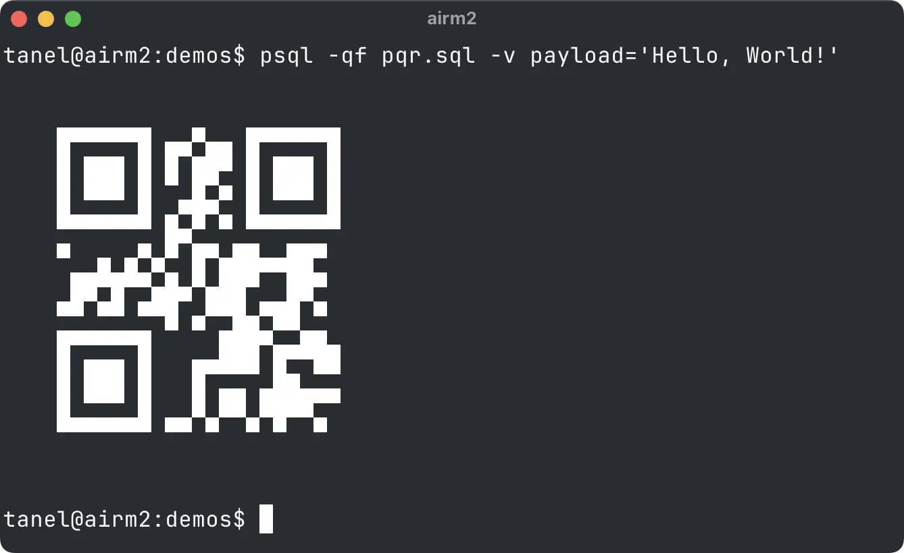
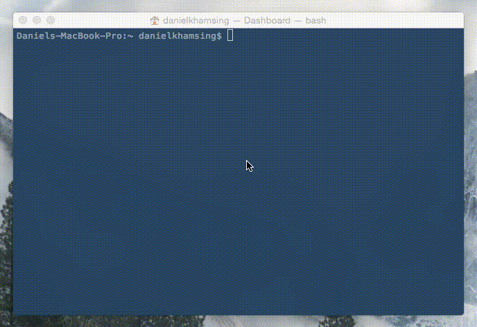

Random Weird Things - Part Ⅳ
Published at 2026-06-06T08:54:00+03:00
Every so often I stumble upon random, weird, and completely unexpected things on the internet. I thought it would be neat to share them here from time to time. This is the fourth run.
/\_/\ /\_/\ /\_/\
( o.o ) ( o.o ) ( o.o )
> ^ < > ^ < > ^ <
/\_/\ Miaaauuuu....
( o.o )
> ^ <
2024-07-05 Random Weird Things - Part Ⅰ
2025-02-08 Random Weird Things - Part Ⅱ
2025-08-15 Random Weird Things - Part Ⅲ
2026-06-06 Random Weird Things - Part Ⅳ (You are currently reading this)
Table of Contents
31. GUI Apps in Your Terminal
term.everything is a from-scratch Wayland compositor that renders GUI apps inside your terminal. GTK, Qt, whatever — it just grabs it and draws it right there. You can run Firefox or GIMP over SSH and interact with it using your mouse. No X forwarding needed. It actually works.

term.everything
32. TempleOS
Terry A. Davis spent years single-handedly building a complete 64-bit operating system from scratch because God told him to. It runs at 640×480, uses a custom language called HolyC, has its own compiler, and is designed as a temple. Boot it up and you get scripture, a talking parrot, and probably the weirdest OS you'll ever see.

TempleOS
33. LLM via DNS
You can query an LLM using nothing but DNS. Just run dig @ch.at "what is golang" TXT +short and you get back an answer in the TXT records. No browser, no API key. It even works over SSH tunnels.
$ dig @ch.at "what is golang" TXT +short
"Golang, or Go, is an open-source programming language developed by Google.
It was created to simplify the development of reliable and efficient software.
Go is known for its simplicity, strong concurrency support, and performance
comparable to C or C++. I" "t features garbage collection, type safety, and
built-in support for concurrent programming through goroutines and channels.
Go is widely used for web servers, cloud services, and distributed systems due
to its efficiency and ease of deployme..."
34. Black Hole in ~125 Bytes
A black hole rendered live in your browser tab in about 125 bytes of JavaScript. No frameworks, no libraries, just code-golf magic. I stared at it way longer than I care to admit.
Black Hole
35. loss32: Win32 on Linux
loss32 is a Linux distro where the entire desktop is classic Win32 apps running natively. ReactOS + WINE on steroids. You get the Windows 98/2000 vibe on a modern Linux kernel. It's pure nostalgia for people who miss the old Windows desktop but don't want the actual Windows.

loss32
36. LLM Rescuer
A Ruby gem that monkey-patches nil so calling a method on it doesn't crash. Instead it asks an LLM what the return value should probably be and hands you whatever it guessed. Imagine debugging that in production.
Examples:
# Classic nil safety
user = find_user(id: "nonexistent") # returns nil
puts user.email
# AI: "Analyzing context... user seems to need an email...
# returning 'no-reply@example.com'"
# Shopping cart magic
cart = session[:cart] # nil because session expired
total = cart.total_price
# AI: "This looks like e-commerce. Based on similar patterns,
# I'll return 0.0 to avoid charging $nil"
# The existential crisis
meaning_of_life = nil
answer = meaning_of_life.to_i
# AI: "Clearly this should be 42. I've read Douglas Adams."
LLM Rescuer
37. Filesystem Backed by an LLM
Mount a folder via FUSE, and every time you read or write a file, an LLM decides what the contents should be. There's a real working implementation. You literally cat a file and the LLM generates the output on the fly.
Example usage:
$ echo "a nginx config for a reverse proxy to localhost:8080" > /mnt/llmfs/nginx.conf
$ cat /mnt/llmfs/nginx.conf
server {
listen 80;
location / {
proxy_pass http://localhost:8080;
}
}
$ echo "my todo list for today" > /mnt/llmfs/todo.txt
$ cat /mnt/llmfs/todo.txt
- Write blog post
- Fix that bug in prod
- Drink coffee
$ cat /mnt/llmfs/todo.txt
- Write blog post (done?)
- Fix that bug in prod
- Drink more coffee
The LLM hallucinates the file contents every single read. Your todo list literally mutates when you look at it. Want a config file? Just describe it in the filename or write a prompt into it.
Filesystem Backed by an LLM
38. QR Code with Pure SQL in Postgres
Someone generated a full QR code using nothing but SQL queries inside PostgreSQL. No extensions, just raw Postgres doing things it was never meant to do. I ran the example and watched a QR code materialize in the query result. Mad stuff.

Pure SQL QR Code
39. The SL Train in Your Terminal
You mistype ls as sl and a steam locomotive comes chugging across your terminal. The SL program has been around for decades and it still cracks me up. There's even a flying train variant.

sl
40. URL in C Code Puzzle
The following C program compiles and runs perfectly:
#include <stdio.h>
int main(void) {
https://foo.zone
printf("hello, world\n");
return 0;
}
The https: becomes a label, the //foo.zone is just a comment. C parser shenanigans.
Found something weird lately? Send me a link!
E-Mail your comments to paul@nospam.buetow.org :-)
Back to the main site